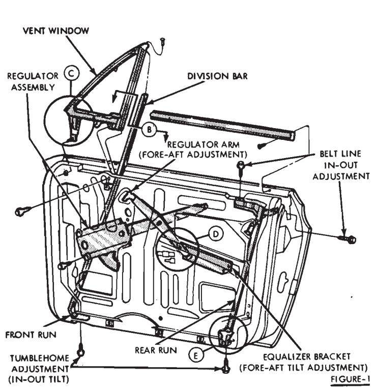
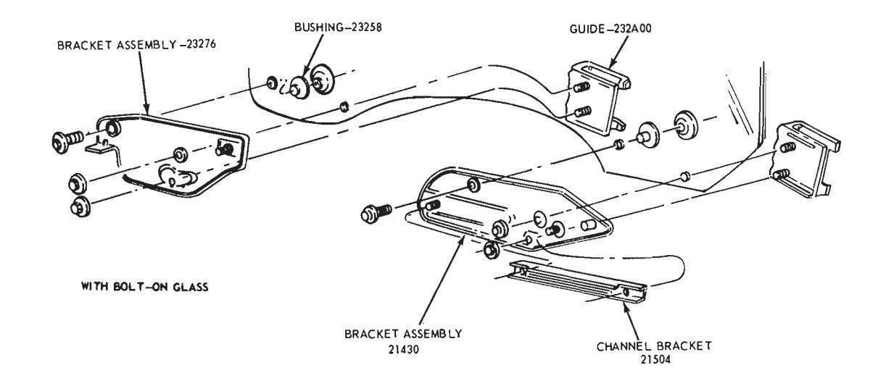
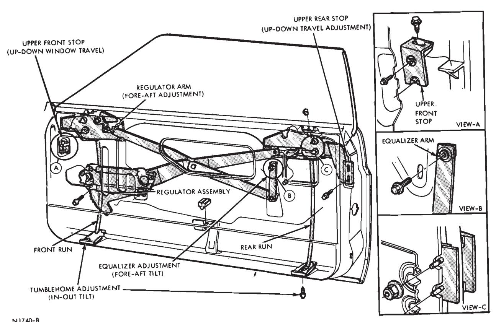
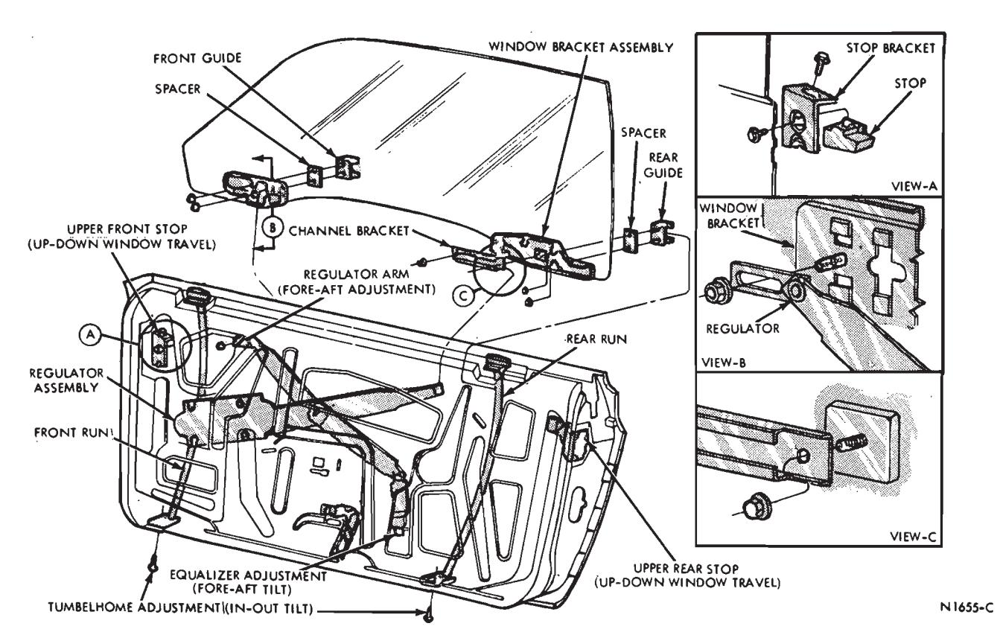
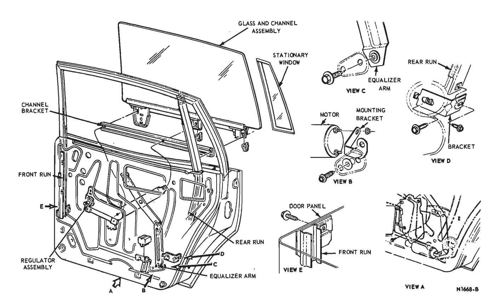
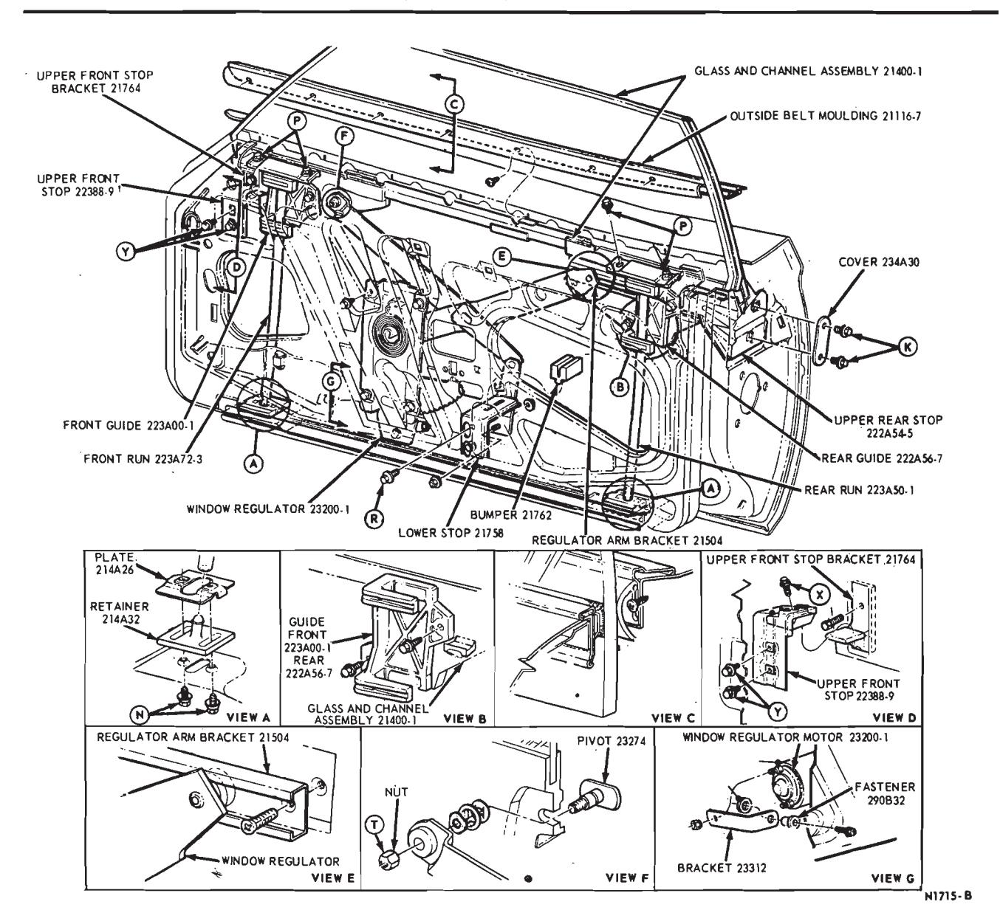
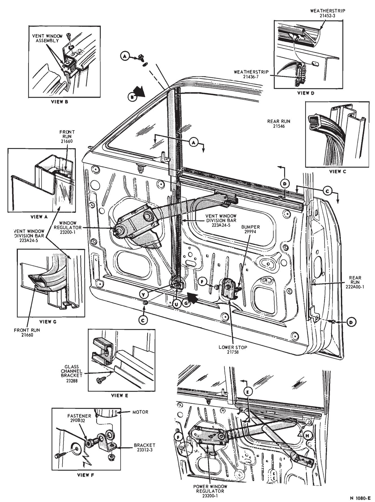
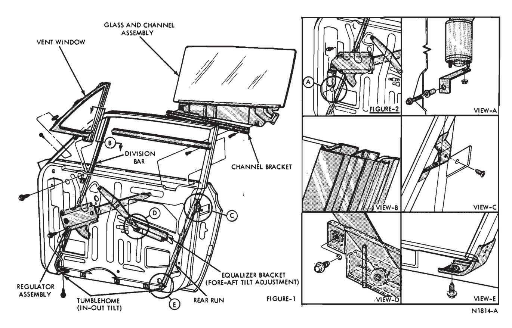
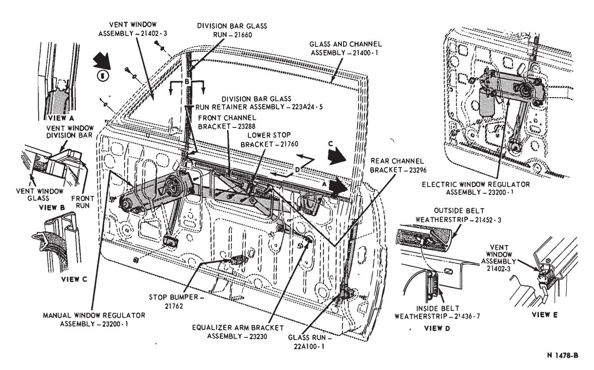
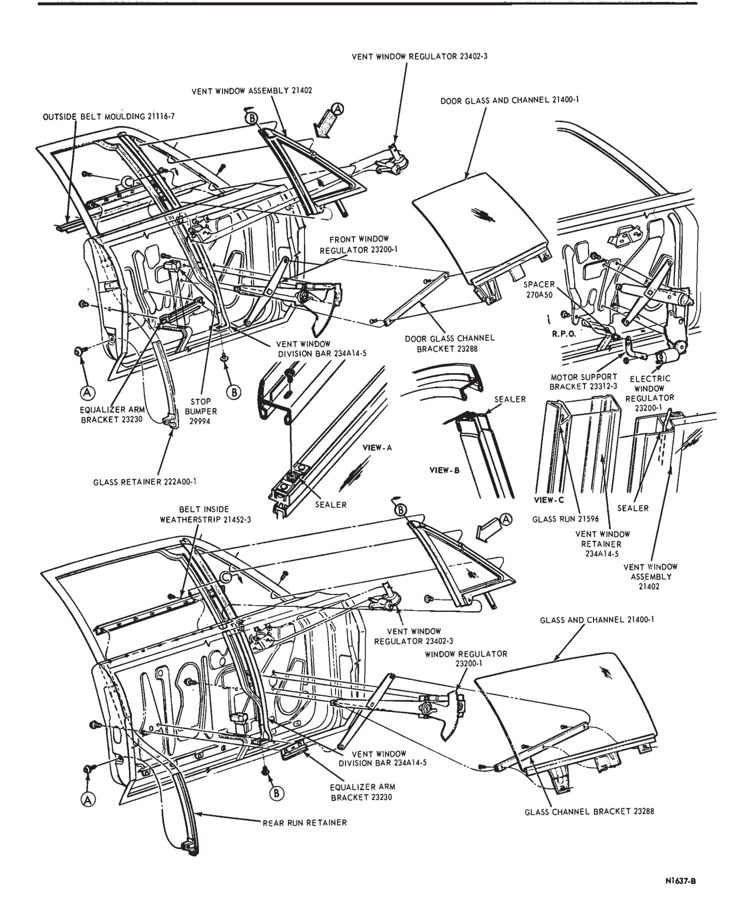

Front and Rear Door Glass · 42-02-06
FRONT DOOR VENTLESS WINDOW GLASS ADJUSTMENT — LINCOLN CONTINENTAL, FORD, MERCURY, METEOR, MUSTANG, COUGAR, FAIRLANE AND MONTEGO
The tumblehome adjustment (in-out tilt) of the top edge of the door glass and the upper stops of the window mechanism can be adjusted without removing the door trim panel. These adjustments can be performed as follows:
Tumblehome Adjustment (In-Out Tilt)
Loosen the screws at the bottom of the front and rear runs (Figs. 1 through 3). Tilt the top of the glass in or out until the window, when raised, will seat squarely in the groove of the roof rail weatherstrip. Tighten the set screws.
Upper Stop Adjustment (Partial)
Loosen the two bolts retaining the upper rear stop to the rear side of the door (Figs. 1 through 3). Then, with the window in the full down position and using a 7/16 inch socket on an extension, loosen the top bolt on the upper front stop. Slide the upper front stop up or down its ramped mounting bracket to adjust the window travel. If sufficient travel is still not obtained, the trim panel must be removed and a complete upper stop adjustment performed. If the procedures above do not give a satisfactory window adjustment, remove the door trim panel and perform the following adjustments:
Upper Stop Adjustment (Complete)
Loosen the two bolts retaining the upper rear stop to the rear side of the door (Figs. 1 through 3). Loosen the two bolts retaining the upper front stop and move the stop up or down to obtain the proper window travel.
Fore and Aft Adjustment
Loosen the regulator front arm retaining nut (Figs. 1 through 3). Then, on two door models, move the glass forward or rearward as required and tighten the nut. On four door models, loosen both the regulator front arm retaining bolt and the stabilizer attaching bolt at the upper rear stop, then raise the glass to the full up position. Move the window as required, then lightly position the front fork of the stabilizer against the rear stop ledge. Tighten both the stabilizer and regulator attaching bolts.
Equalizer Adjustment (Fore and Aft Tilt)
Loosen the equalizer retaining nut at the regulator lower arm. Move the equalizer up or down to adjust the fore and aft tilt of the glass. Moving the equalizer up will move the front edge of the glass down and the rear edge of the glass up. Moving the equalizer down will raise the front edge of the glass and lower the rear edge.
FRONT DOOR VENTLESS WINDOW GLASS — FAIRLANE AND MONTEGO MODEL 57 — TUMBLEHOME (IN-OUT TILT)
Without removing the door trim panel, position the window in the full up position and loosen the two screws at the bottom of the front and rear runs (Fig. 1). Move the glass in or out as required and tighten the screws at the bottom of the runs.

Fig. 1 — Front Door Glass Mechanism — Fairlane and Montego Model 57
All the following adjustments must be made with the trim panel removed.
Belt Line In-Out Adjustment
The belt line in-out adjustment is controlled by a bracket located at the top of the rear run (Fig. 4). The bracket is retained by two screws. Loosen the screws and move the glass in or out until the front glass is flush with the rear door glass. Tighten the screws
Upper Stop Adjustment
Loosen the screws retaining the upper front and rear stops (Fig. 4). Move the glass as required to achieve proper glass travel and tighten the set screws retaining the stops.
Equalizer Adjustment
Position the window in the full up position. Loosen the two screws at each end of equalizer arm bracket. Move the bracket up or down until the top edge of the glass is parallel with the roof side rail. Tighten the equalizer arm bracket nuts.
Front Door Ventless Window Glass Adjustment — Thunderbird and Continental Mark III
The tumblehome (in-out tilt) of the top edge of the door glass and the upper stops of the window mechanism can be adjusted without removing the door trim panel. These adjustments can be performed as follows:
Upper Front Stop
- Lower the glass to the full down position.
- Insert a 7/16 inch socket into the glass opening (between the inner and outer panel) and loosen the upper front stop attaching screw (Figs. 5 and 6).
- To raise the stop, slide the stop toward the rear of the door. To lower the stop, slide the stop toward the front of the door.
- When the desired stop adjustment is obtained, tighten the stop attaching screw securely.
Upper Rear Stop
- Loosen the two upper rear stop attaching screws (Figs. 4 and 5).
- With the window in the full up position, place the upper rear stop down against the stop on the glass channel. Then, tighten the two stop attaching screws.
Tumblehome (In-Out Tilt)
-
Loosen the front and rear run retainer attaching screws (Figs. 4 and 5).
-
With the glass up, position the glass inboard or outboard as required to obtain proper engagement of the glass with the roof rail weatherstrip and a flush fit with the quarter window glass. Then, tighten the two retainer attaching screws.
-
Raise and lower the glass to be sure it is free of binds. If any binding is detected, lower the glass and loosen the front run retainer attaching screw. This will correct any misalignment of the front run with the rear run. Tighten the front run retainer attaching screw.
If the above procedures do not give a satisfactory window adjustment, remove the door trim panel and perform the following adjustments:

Fig. 2 — Front Door Ventless Window Glass Mechanism — Ford, Mercury and Meteor
Fig. 3 — Front Door Ventless Window Glass Mechanism — Mustang and Cougar
Fig. 4 — Front Door Ventless Window Glass Mechanism — Fairlane and Montego — Models 63, 65, 66 and 76
Fig. 5 — Front Ventless Window Glass Mechanism — Thunderbird
Fore-Aft Adjustment
With the glass in the full up position, loosen the nut on the front regulator arm (Figs. 5 and 6). Move the glass fore or aft as required and tighten the nut.
Upper Stop Adjustment (Complete)
Loosen both the upper front stop and upper rear stop retaining screws. With the window in the up position, move both stops against the channel bracket and tighten the stop attaching bolts.
Equalizer Adjustment
With the window up, loosen the equalizer arm attaching nut. Move the equalizer up or down until the glass is parallel with the roof rail weatherstrip. Tighten the equalizer attaching nut.
Front Door Window Glass Adjustment — Falcon, Fairlane, and Montego Models 54 and 71
- Remove the trim panel and watershield from the door.
- To obtain proper alignment of the rear run to the vent window division bar and front run, loosen the nut and washer assembly (Figs. 7 and 8) and the screw.
- Lower the glass until the top edge of the glass is four inches above the belt line. Turn the screw (Figs. 7 and 8) clockwise or counterclockwise as required to bring the front run into alignment with the rear run. Then, tighten the nut and the screw to 8-23 ft-lb torque.
- To obtain a flush condition between the top edge of the glass and the belt line when the glass is down, loosen the two lower stop attaching screws (Figs. 7 and 8).
- Move the glass to a flush position with the belt line. Then, position the lower stop against the glass channel and tighten the attaching screws (Figs. 7 and 8) to 8-23 ft-lb torque.
Front Door Window Glass Adjustment — Falcon Model
- Remove the door trim panel and peel back the watershield to provide access. Refer to Fig. 9 for the following adjustments.
- To obtain proper alignment of the lockside glass run retainer assembly to the door window frame and vent window division bar with the retainer, loosen the nut and washer assembly retaining the front run and the screw and washer assembly retaining the rear run. Drop the top edge of the glass and channel assembly to approximately four inches above the door outer panel belt line. Turn the screw at the bottom of the front run clockwise or counterclockwise as required. Tighten the run retaining screws.
- To obtain a flush condition between the top edge of the glass and channel assembly and the belt line when the window is in the down position, the stop assembly is adjusted up or down at the lower stop bracket. After adjustment, tighten the lower stop bracket retaining screw and washer assemblies securely.
- Install the watershield and trim panel on the door.
Front Door Window Glass Adjustment — Ford, Mercury and Meteor Models 54, 62 and 71
-
To properly align the run and retainer assemblies with the door window frame and vent window division bar so that the window does not bind, yet maintain a snug fit, loosen the screw and washer assemblies retaining the front and rear runs (Fig. 10).

Fig. 6 — Door Ventless Window Glass Mechanism — Continental Mark III -
Lower the window so that the top of the glass is approximately four inches above the belt line, thus permitting the assemblies to seat.
-
Tighten the screw and washer assemblies (Fig. 10).
Front Door Glass Adjustment — Maverick
- Remove the door trim panel and weathersheet.
- To obtain proper alignment of the glass runs to the door frame, raise the window to the up position. Loosen the front and rear run lower retaining screws (Fig. 19). Cycle the window up and down to assure a good window fit, then tighten the run retaining screws.
Rear Door Window Glass Adjustment — Falcon
- Remove the door trim panel and watershield.
- To obtain proper alignment of retainer and division bar assembly-to-door-window frame, loosen the nut and washer assembly retaining the rear run retainer to the door inner panel (Fig. 11). Drop the glass and channel assembly to its down position and turn the adjusting screw (Fig. 11) clockwise or counterclockwise as required. Tighten nut and washer assembly securely (Fig. 11).
- Install the watershield and door trim panel.
Rear Door Window Glass Adjustment — Lincoln Continental, Ford, Mercury and Meteor Models 53 and 57
The tumblehome (in-out tilt) adjustment of the door glass and the upper stops of the window mechanism can be adjusted without removing the door trim panel. These adjustments can be performed as follows:
Upper Front Stop
-
Raise the glass to the full up position.
-
Loosen the two stop attaching screws (Fig. 12).

Fig. 7 — Front Door Window Mechanism — Fairlane and Montego Model 71
Fig. 8 — Front Door Window Mechanism — Fairlane and Montego Model 54
Fig. 9 — Door Window Mechanism — Falcon — Model 62
Fig. 10 — Front Door Window Glass Mechanism — Ford, Mercury and Meteor Models 54, 62 and 71front stop, or the in and out position of the glass top edge.
Upper Front Stop
With the glass in the up position, loosen the upper front stop attaching bolts. Move the stop firmly against the channel and tighten the stop attaching bolts.
Tumblehome (In-Out Tilt)
Loosen the front run retaining screw at the bottom of the run (Fig. 13). Then loosen the rear run lower retaining screw. Move the glass in or out as required and tighten the run retaining screws.
If the above procedures do not give a satisfactory window adjustment, remove the door trim panel and perform the following adjustments:
Fore-Aft Adjustment
With the window in the up position, loosen the nut retaining the regulator arm to the channel bracket (Fig. 13). Move the glass fore or aft as required and tighten the nut.
Equalizer Adjustment (Fore-Aft Tilt)
Loosen the bolt retaining the equalizer arm to the door inner panel. Move the equalizer arm up or down until the glass is parallel with the roof rail weatherstrip. Tighten the attaching bolt.
Rear Door Window Glass Adjustment — Fairlane and Montego — Model 54
The rear door window glass can be adjusted inboard or outboard in the glass run without removing the trim panel from the door. Loosen the screw and washer assemblies at the bottom of each run (Fig. 14) and position the glass as required in the glass run. Then, tighten the screw and washer assemblies securely.
Rear Door Window Glass Adjustment — Ford, Mercury and Meteor Models 54 and 71
- Loosen the two screw and washer assemblies which retain the rear run (Fig. 15).
- Position the glass so that the top edge of the glass is approximately four inches above the belt line.
- Tighten the screw and washer assemblies securely.